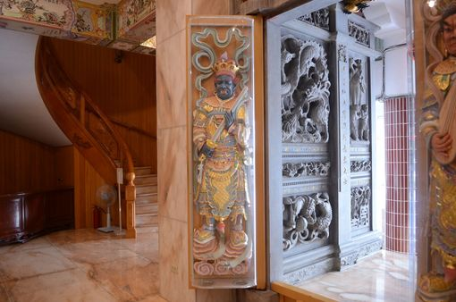
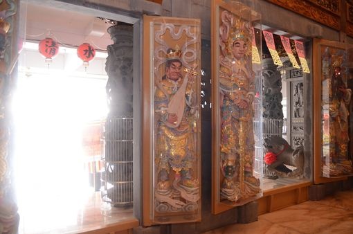
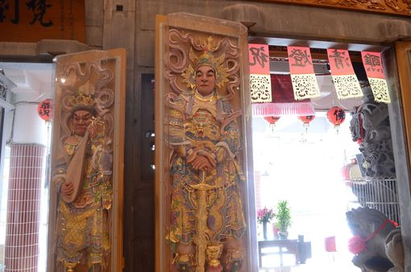
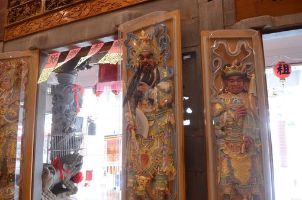
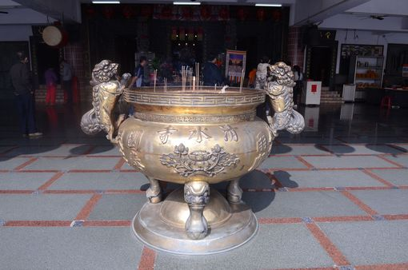
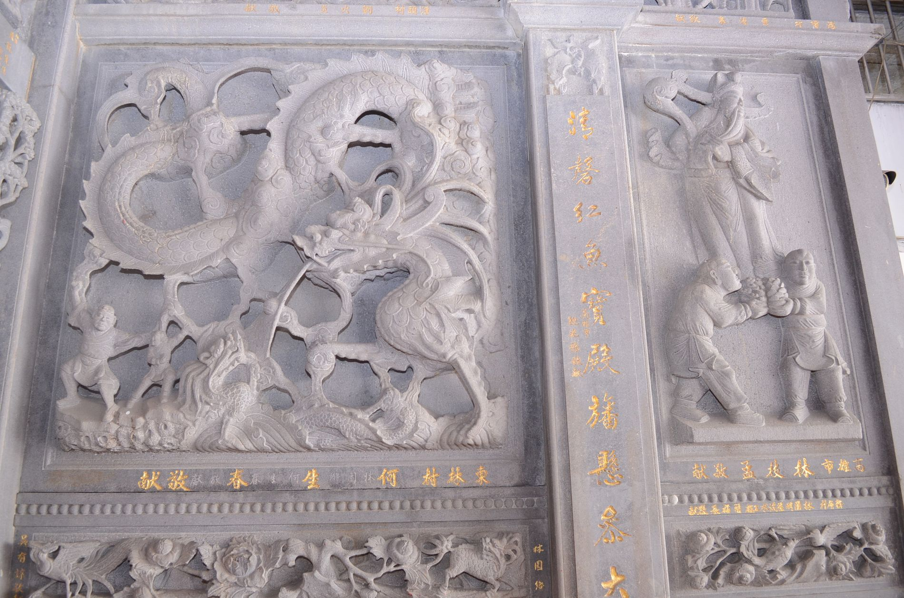

【清水寺小知識】 |
|
|---|---|
【一、四大天王】四大天王： 風、調、雨、順 |
|
(1)風：南方增長天王（梵文：Virūḍhaka；藏名：Hphags-skyes-po）：「增長」意為能傳令眾生，增長善根，護持佛法，故名增長天王。住須彌山琉璃埵，身為青色，穿甲冑，手握寶劍，有兩義：一、寶劍象徵智慧，慧劍斬煩惱[1]；二、為的是保護佛法，不受侵犯。他負責守護南瞻部洲，以鳩盤茶、薜荔多等為增長天王的部眾，是『二十諸天』中的第五天王。 |
 |
(2)調：方持國天王（梵文：Dhṛtarāṣṭra；藏名：Yul-hkhor-bsrun）：「持國」意為慈悲為懷，保護眾生，護持國土，故名持國天王。住須彌山白銀埵，身為白色，穿甲冑，手持琵琶或阮琴 ，有兩義：一、弦樂器鬆緊要適中，太緊則易斷，太鬆則聲不響，表行中道之法[1]；二、是主樂神，表明他要用音樂來使眾生皈依佛教。他負責守護東勝神洲，以 乾闥婆、緊那羅、富單那、毗舍闍等為持國天王的部眾，是『二十諸天』中的第四天王。 |
 |
(3)雨：北方多聞天王（梵文：Vaiśravaṇa；藏名：Rnam-thos-kyi-bu / Jambhala）：又名毗沙門，「多聞」意為頗精通佛法，以福、德聞於四方。住須彌山黃金埵，身為綠色，穿甲冑，左手握銀，右持寶傘（或作寶幡），有兩義：一：傘蓋代表要保護自己的內心不受外面環境染污[1]；二、用以遮蔽世間，避免魔神危害，以護持人民財富。又名施財天，是古印度的財神。他負責守護北俱蘆洲，以夜叉與羅剎為多聞天王的部眾，是『二十諸天』中的第三天王。 |

|
(4)順：西方廣目天王（梵文：Virūpākṣa；藏名：Mig-mi-bzan,Spyan-mi-bzan）：「廣目」意為能以淨天眼隨時觀察世界，護持人民，故名廣目天王。住須彌山水晶埵，身為紅色，穿甲冑，手纏一條龍或是蛇，有兩義：（一）、表世間多變之意，（二）、．是龍神的首領。另一手上拿著寶珠，表內心不變之意[1]。他負責守護西牛賀洲，以龍王等為廣目天王的部眾，是『二十諸天』中的第六天王。 |
 |
【二、香爐介紹】香爐兩旁有兩隻龍生九子之一的叫狻猊，因為它很喜歡聞香，所以把它設計在旁邊，香爐的柱腳是龍生九子之一的饕餮，原本它有四隻腳，但是因為他太愛吃了所以就把自己的一隻腳吃掉了，所以香爐只剩下三支柱腳。 |  |
【三、龍壁介紹】身體與主神的方向一致，左邊是入龍門、右邊是出虎口，所以左手邊是入口、右手邊是出口(屬羊的人如果從虎口進去，會變成羊入虎口)，而入口的牆壁也有它自己的名字，牆壁最上方稱為頂堵、中間稱為腰堵、最下面稱為裙堵，整面牆總稱為龍堵壁、出口是虎堵壁。 |  |
| 資料來源： 1、1.https://zh.wikipedia.org/wiki/%E5%9B%9B%E5%A4%A7%E5%A4%A9%E7%8E%8B 2、文史工作者李俊福顧問所提供的故事 |
|
【清水寺小知識】-網頁製作心得 |
2年1班魏麒恩 |
|
以前到廟裡拜拜，不會注意那麼多，但是這次李先生說這麼多知識，我也是吸收很多，原來廟裡也藏了那麼多知識，真想在認識更多一些，可惜時間關係，所以不能夠了解更多。 |
|